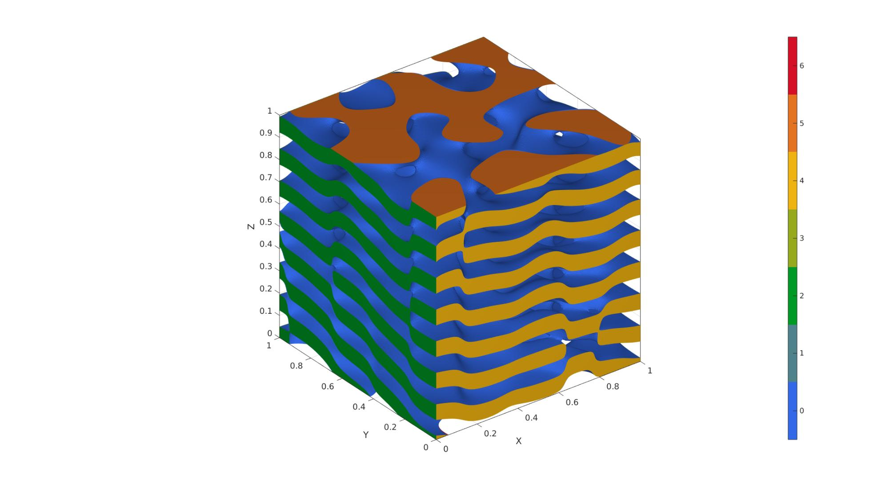
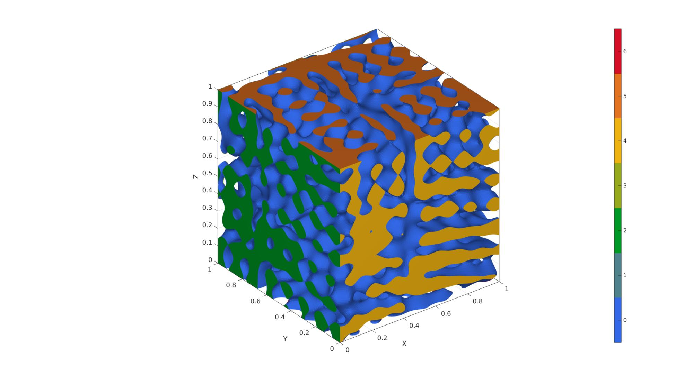
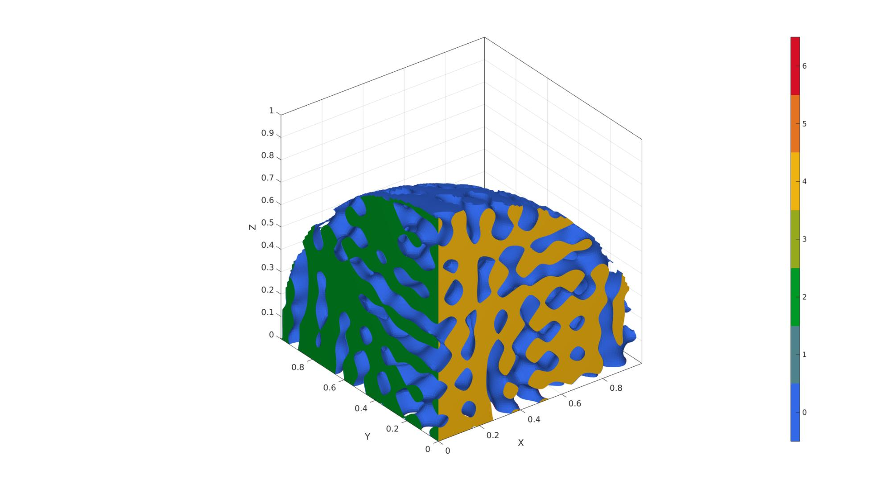
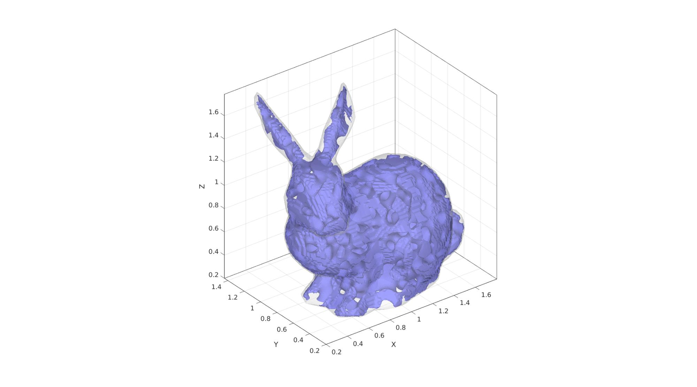
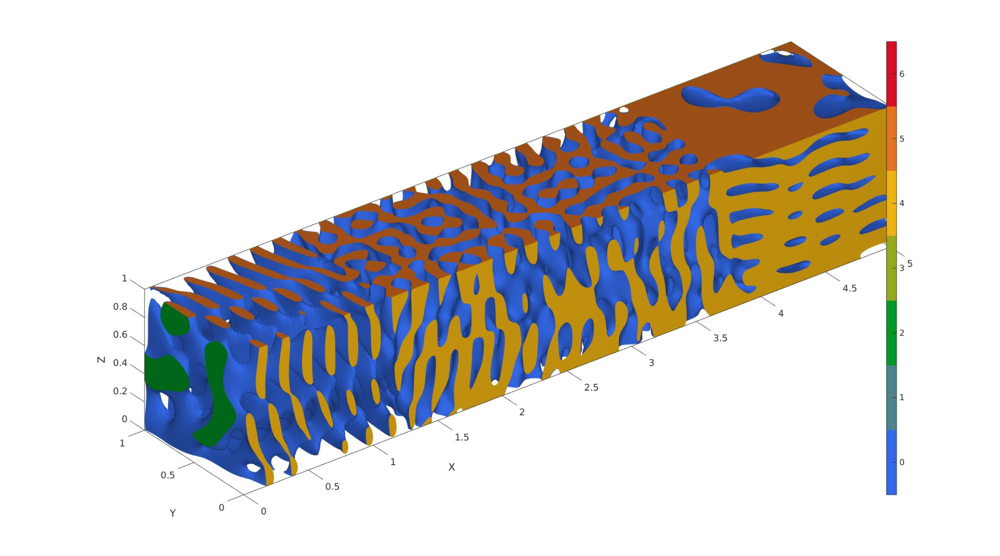

spinodoid
Below is a demonstration of the features of the spinodoid function
Contents
- Syntax
- Description
- Examples
- Basic settings
- Example 1: Isotropic spinodoid
- Example 2: Lamellar spinodoid
- Example 3: Columnar spinodoid
- Example 4: Cubic spinodoid
- Example 5: Non-cubic domains by specifying "trimDomainFunction"
- Example 6: Non-cubic domains by specifying a domain surface
- Example 7: Spatially-graded spinodoids
clear; close all; clc;
Syntax
[F,V,C,GRF,X,Y,Z,levelset]=spinodoid(inputStruct);
Description
-----------------------------------------------------------------------
This function generates Spinodoid microstructures which are non-periodic and stochastic bi-continous microstructures that approximate the topology observed in spinodal decomposition. The microstructures are generated using a Gaussian random field (GRF) and can be made anisotropic by tuning the anisotropy of the GRF.
To generate spatially-graded spinodoids, check the spatially-graded example below (HELP_spinodoid: example 5)
Based on / how to cite:
-----------------------------------------------------------------------
(1) S. Kumar, S. Tan, L. Zheng, D.M. Kochmann. Inverse-designed spinodoid metamaterials. npj Computational Materials, 6 (2020), 73. https://doi.org/10.1038/s41524-020-0341-6
(2) L. Zheng, S. Kumar, D.M. Kochmann. Data-driven topology optimization of spinodoid metamaterials with seamlessly tunable anisotropy. Computer Methods in Applied Mechanics and Engineering, 383 (2021), 113894. https://doi.org/10.1016/j.cma.2021.113894
-----------------------------------------------------------------------
Input structure and default values:
inputStruct.isocap=true; % option to cap the isosurface
inputStruct.domainSize=1; % domain size
inputStruct.resolution=60; % resolution for sampling GRF
inputStruct.waveNumber=10*pi; % GRF wave number
inputStruct.numWaves=1000; % number of waves in GRF
inputStruct.relativeDensity=0.5; % relative density: between [0.3,1]
inputStruct.thetas=[15 15 15]; % conical half angles (in degrees) along xyz axes for controlling the anisotropy. Note: each entry must be either 0 or between [15,90] degrees.
inputStruct.R = eye(3); % Rotate the GRF, R must be SO(3)
inputStruct.ignoreChecks = false; % Ignore checks on parameters if true (not advised)
The function returns the following:
F: faces of the surface mesh
V: vertices of the surfae mesh
C: color data for the surface mesh
GRF (3d matrix): Underlying Gaussian random field (GRF) before levelset is applied
X (3d matrix): X coordinates where GRF is evaluated
Y (3d matrix): Y coordinates where GRF is evaluated
Z (3d matrix): Z coordinates where GRF is evaluated leveset (scalar): Levelset applied on GRF to compute the isosurfaces
-----------------------------------------------------------------------
Original author: Siddhant Kumar, September 2020
(contact: Sid.Kumar@tudelft.nl)
-----------------------------------------------------------------------
Examples
Basic settings
% Random seed rng(1) % Plot settings cMap=parula(250); faceAlpha1=1; faceAlpha2=0.5; edgeColor1='none'; edgeColor2='none'; fontSize=15;
Example 1: Isotropic spinodoid
inputStruct.isocap=true; % option to cap the isosurface inputStruct.domainSize=1; % domain size inputStruct.resolution=75; % resolution for sampling GRF inputStruct.waveNumber=15*pi; % GRF wave number inputStruct.numWaves=1000; % number of waves in GRF inputStruct.relativeDensity=0.5; % relative density: between [0.3,1] inputStruct.thetas=[90 0 0]; % conical half angles (in degrees) along xyz inputStruct.R = eye(3); % Rotate the GRF, R must be SO(3) % Create spinodoid [F,V,C]=spinodoid(inputStruct); % Using grouping to keep only largest group groupOptStruct.outputType='label'; [G,~,groupSize]=tesgroup(F,groupOptStruct); %Group connected faces [~,indKeep]=max(groupSize); %Index of largest group %Keep only largest group F=F(G==indKeep,:); %Trim faces C=C(G==indKeep,:); %Trim color data [F,V]=patchCleanUnused(F,V); %Remove unused nodes % Visualize surface cFigure; gpatch(F,V,C,'none'); axisGeom; camlight headlight; colormap gjet; icolorbar; gdrawnow;

Example 2: Lamellar spinodoid
clear inputStruct; %Clear previous inputStruct.isocap=true; % option to cap the isosurface inputStruct.domainSize=1; % domain size inputStruct.resolution=100; % resolution for sampling GRF inputStruct.waveNumber=15*pi; % GRF wave number inputStruct.numWaves=1000; % number of waves in GRF inputStruct.relativeDensity=0.5; % relative density: between [0.3,1] inputStruct.thetas=[0 0 30]; % conical half angles (in degrees) along xyz inputStruct.R = [cos(pi/6),sin(pi/6),0; -sin(pi/6),cos(pi/6),0; 0,0,1]; % Rotate the GRF, R must be SO(3) % Create spinodoid [F,V,C]=spinodoid(inputStruct); % Using grouping to keep only largest group groupOptStruct.outputType='label'; [G,~,groupSize]=tesgroup(F,groupOptStruct); %Group connected faces [~,indKeep]=max(groupSize); %Index of largest group %Keep only largest group F=F(G==indKeep,:); %Trim faces C=C(G==indKeep,:); %Trim color data [F,V]=patchCleanUnused(F,V); %Remove unused nodes % Visualize surface cFigure; gpatch(F,V,C,'none'); axisGeom; camlight headlight; colormap gjet; icolorbar; gdrawnow;
Example 3: Columnar spinodoid
clear inputStruct; %Clear previous inputStruct.isocap=true; % option to cap the isosurface inputStruct.domainSize=1; % domain size inputStruct.resolution=100; % resolution for sampling GRF inputStruct.waveNumber=15*pi; % GRF wave number inputStruct.numWaves=1000; % number of waves in GRF inputStruct.relativeDensity=0.5; % relative density: between [0.3,1] inputStruct.thetas=[20 15 0]; % conical half angles (in degrees) along xyz inputStruct.R = eye(3); % Rotate the GRF, R must be SO(3) % Create spinodoid [F,V,C]=spinodoid(inputStruct); % Using grouping to keep only largest group groupOptStruct.outputType='label'; [G,~,groupSize]=tesgroup(F,groupOptStruct); %Group connected faces [~,indKeep]=max(groupSize); %Index of largest group %Keep only largest group F=F(G==indKeep,:); %Trim faces C=C(G==indKeep,:); %Trim color data [F,V]=patchCleanUnused(F,V); %Remove unused nodes % Visualize surface cFigure; gpatch(F,V,C,'none'); axisGeom; camlight headlight; colormap gjet; icolorbar; gdrawnow;

Example 4: Cubic spinodoid
clear inputStruct; %Clear previous inputStruct.isocap=true; % option to cap the isosurface inputStruct.domainSize=1; % domain size inputStruct.resolution=100; % resolution for sampling GRF inputStruct.waveNumber=15*pi; % GRF wave number inputStruct.numWaves=1000; % number of waves in GRF inputStruct.relativeDensity=0.5; % relative density: between [0.3,1] inputStruct.thetas=[20 20 20]; % conical half angles (in degrees) along xyz inputStruct.R = eye(3); % Rotate the GRF, R must be SO(3) % Create spinodoid [F,V,C]=spinodoid(inputStruct); % Using grouping to keep only largest group groupOptStruct.outputType='label'; [G,~,groupSize]=tesgroup(F,groupOptStruct); %Group connected faces [~,indKeep]=max(groupSize); %Index of largest group %Keep only largest group F=F(G==indKeep,:); %Trim faces C=C(G==indKeep,:); %Trim color data [F,V]=patchCleanUnused(F,V); %Remove unused nodes % Visualize surface cFigure; gpatch(F,V,C,'none'); axisGeom; camlight headlight; colormap gjet; icolorbar; gdrawnow;
Example 5: Non-cubic domains by specifying "trimDomainFunction"
% In this example, we create a spinodoid in the shape of 1/8th of a sphere % with radius=1 and centered at (0,0,0). % For this purpose, we first % create a function with handle trimDomainFunction (preceeded by @) that % takes as input coordinates (x,y,z) and outputs true if the point lies % inside the domain and false if outside. Note: x,y,z can be matrices and % so all operations should be element-wise (denoted by '.'). trimDomainFunction = @(x,y,z)(x.^2+y.^2+z.^2 <= 1^2); clear inputStruct; %Clear previous inputStruct.isocap=true; % option to cap the isosurface inputStruct.domainSize=1; % domain size inputStruct.resolution=100; % resolution for sampling GRF inputStruct.waveNumber=15*pi; % GRF wave number inputStruct.numWaves=1000; % number of waves in GRF inputStruct.relativeDensity=0.5; % relative density: between [0.3,1] inputStruct.thetas=[20 20 20]; % conical half angles (in degrees) along xyz inputStruct.R = eye(3); % Rotate the GRF, R must be SO(3) inputStruct.trimDomainFunction = trimDomainFunction; % trimDomainFunction % Create spinodoid [F,V,C]=spinodoid(inputStruct); % Using grouping to keep only largest group groupOptStruct.outputType='label'; [G,~,groupSize]=tesgroup(F,groupOptStruct); %Group connected faces [~,indKeep]=max(groupSize); %Index of largest group %Keep only largest group F=F(G==indKeep,:); %Trim faces C=C(G==indKeep,:); %Trim color data [F,V]=patchCleanUnused(F,V); %Remove unused nodes % Visualize surface cFigure; gpatch(F,V,C,'none'); axisGeom; camlight headlight; colormap gjet; icolorbar; gdrawnow;
Example 6: Non-cubic domains by specifying a domain surface
domainSize=2; %Create example domain cropping surface [Fd,Vd]=stanford_bunny; Vd=Vd-min(Vd,[],1); %Start at 0 Vd=Vd./max(Vd(:),[],1); %End at 1 Vd=0.1*domainSize+(Vd.*0.8.*domainSize); %Scale to fit in domain clear inputStruct inputStruct.isocap=true; % option to cap the isosurface inputStruct.domainSize=domainSize; % domain size inputStruct.resolution=150; % resolution for sampling GRF inputStruct.waveNumber=15*pi; % GRF wave number inputStruct.numWaves=1000; % number of waves in GRF inputStruct.relativeDensity=0.5; % relative density: between [0.3,1] inputStruct.thetas=[90 0 0]; % conical half angles (in degrees) along xyz inputStruct.R = eye(3); % Rotate the GRF, R must be SO(3) inputStruct.patchDomain.F=Fd; inputStruct.patchDomain.V=Vd; % Create spinodoid [F,V,C,GRF]=spinodoid(inputStruct); % Using grouping to keep only largest group groupOptStruct.outputType='label'; [G,~,groupSize]=tesgroup(F,groupOptStruct); %Group connected faces [~,indKeep]=max(groupSize); %Index of largest group %Keep only largest group F=F(G==indKeep,:); %Trim faces C=C(G==indKeep,:); %Trim color data [F,V]=patchCleanUnused(F,V); %Remove unused nodes % Visualize surface cFigure; gpatch(F,V,'bw','none'); gpatch(Fd,Vd,'w','none',0.25); axisGeom; camlight headlight; gdrawnow;
Example 7: Spatially-graded spinodoids
% ----------------------------------------------------------------------- % For reference, see Appendix A of the following paper: % L. Zheng, S. Kumar, D.M. Kochmann. % Data-driven topology optimization of spinodoid metamaterials with % seamlessly tunable anisotropy. % Computer Methods in Applied Mechanics and Engineering, 383 (2021), 113894. % https://doi.org/10.1016/j.cma.2021.113894 % ----------------------------------------------------------------------- % Example: how to grade 3 spinodoids: A, B, and C % Set common parameters for 3 different spinodoids input_A.isocap=true; % option to cap the isosurface input_A.domainSize=[5,1,1]; % domain size input_A.resolution=60*input_A.domainSize; % resolution for sampling GRF input_A.waveNumber=12*pi; % GRF wave number input_A.numWaves=500; % number of waves in GRF input_B = input_A; input_C = input_B; % Set parameters for individual spinodoids input_A.relativeDensity=0.3; % relative density: between [0.3,1] input_A.thetas=[30 0 0]; % conical half angles (in degrees) along input_B.relativeDensity = 0.5; input_B.thetas=[30 30 0]; input_C.relativeDensity = 0.8; input_C.thetas=[0 0 30]; % Compute individual spinodoids % No need to store faces and vertices, only require underlying GRF, % grid coordinates, and levelset values [~,~,~,GRF_A,X,Y,Z,levelset_A]=spinodoid(input_A); [~,~,~,GRF_B,~,~,~,levelset_B]=spinodoid(input_B); [~,~,~,GRF_C,~,~,~,levelset_C]=spinodoid(input_C); % Define the central location of each individual spinodoid in space % E.g., At center_A, the spinodoid will definitely correspond to input_A. % As we move away from center_A, it will slowly transition into other % spinodoids with input_B and input_C. center_A = [0.0, 0.5, 0.0]; center_B = [2.5, 0.5, 0.5]; center_C = [5.0, 0.5, 1.0]; % kappa controls the lengthscale of transition between spinodoids % Higher kappa => faster transition % Lower kappa => slower transition kappa = 10; % Using Gaussian (a.k.a. radial basis functions) interpolation. % One can use any interpolation scheme of choice as long as weights at % every grid point sum up to 1. % Computing the weights for each spinodoid evaluated on all grid points. weights_A = exp(-kappa * squared_distance_from_point(X,Y,Z,center_A)); weights_B = exp(-kappa * squared_distance_from_point(X,Y,Z,center_B)); weights_C = exp(-kappa * squared_distance_from_point(X,Y,Z,center_C)); % Weights must sum up to 1. sum_weights = weights_A + weights_B + weights_C; weights_A = weights_A ./ sum_weights; weights_B = weights_B ./ sum_weights; weights_C = weights_C ./ sum_weights; % Interpolating using the above weights graded_GRF = weights_A .* (GRF_A - levelset_A) ... + weights_B .* (GRF_B - levelset_B) ... + weights_C .* (GRF_C - levelset_C); % Compue isosurface graded_levelset = 0; [f,v] = isosurface(X,Y,Z,graded_GRF,graded_levelset); c=zeros(size(f,1),1); % Compute isocaps [fc,vc] = isocaps(X,Y,Z,graded_GRF,graded_levelset,'enclose','below'); % Boilerplate code for preparing output for exporting/visualization nc=patchNormal(fc,vc); cc=zeros(size(fc,1),1); cc(nc(:,1)<-0.5)=1; cc(nc(:,1)>0.5)=2; cc(nc(:,2)<-0.5)=3; cc(nc(:,2)>0.5)=4; cc(nc(:,3)<-0.5)=5; cc(nc(:,3)>0.5)=6; % Join sets [f,v,c]=joinElementSets({f,fc},{v,vc},{c,cc}); % Merge nodes [f,v]=mergeVertices(f,v); % Check for unique faces [~,indUni,~]=unique(sort(f,2),'rows'); f=f(indUni,:); %Keep unique faces c=c(indUni); % Remove collapsed faces [f,logicKeep]=patchRemoveCollapsed(f); c=c(logicKeep); % Remove unused points [f,v]=patchCleanUnused(f,v); % Invert faces f=fliplr(f); %Visualize vizualize_graded_spinodoid(f,v,c) % Compute squared distance from a point function [sq_dist] = squared_distance_from_point(X,Y,Z,point) % X, Y, Z are 3D matrices % point is a 1x3 vector sq_dist = (X-point(1)).^2 + (Y-point(2)).^2 + (Z-point(3)).^2; end function [] = vizualize_graded_spinodoid(F,V,C) % Using grouping to keep only largest group groupOptStruct.outputType='label'; [G,~,groupSize]=tesgroup(F,groupOptStruct); %Group connected faces [~,indKeep]=max(groupSize); %Index of largest group %Keep only largest group F=F(G==indKeep,:); %Trim faces C=C(G==indKeep,:); %Trim color data [F,V]=patchCleanUnused(F,V); %Remove unused nodes % Visualize surface cFigure; gpatch(F,V,C,'none'); axisGeom; camlight headlight; colormap gjet; icolorbar; gdrawnow; end

GIBBON www.gibboncode.org
Kevin Mattheus Moerman, gibbon.toolbox@gmail.com
GIBBON footer text
License: https://github.com/gibbonCode/GIBBON/blob/master/LICENSE
GIBBON: The Geometry and Image-based Bioengineering add-On. A toolbox for image segmentation, image-based modeling, meshing, and finite element analysis.
Copyright (C) 2006-2023 Kevin Mattheus Moerman and the GIBBON contributors
This program is free software: you can redistribute it and/or modify it under the terms of the GNU General Public License as published by the Free Software Foundation, either version 3 of the License, or (at your option) any later version.
This program is distributed in the hope that it will be useful, but WITHOUT ANY WARRANTY; without even the implied warranty of MERCHANTABILITY or FITNESS FOR A PARTICULAR PURPOSE. See the GNU General Public License for more details.
You should have received a copy of the GNU General Public License along with this program. If not, see http://www.gnu.org/licenses/.